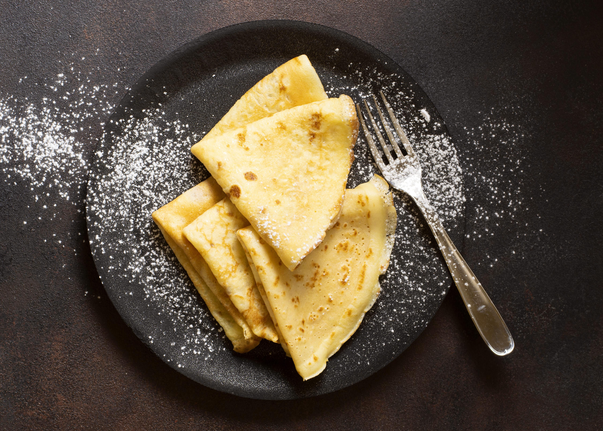

Crêpes

Crêpes classiques au sucre
Les crêpes sont indispensables de la cuisine de l'étudiant.
Ingredients
oeufs
lait
farine
sucre
beurre
Steps
Mélanger le beurre, la farine, le sucre et les oeufs
Faire chauffer la pâte
Home